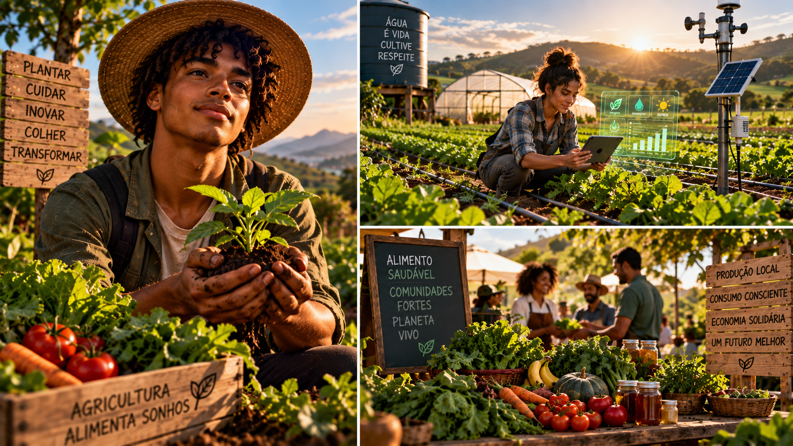

Como a terra gera renda: produção, custos, preço, mercado, gestão e regeneração para transformar cultivo em atividade economicamente sustentável.
6 módulos24 aulasMicroplano agroeconômico
0 de 24 aulas concluídas
Produzir é também decidir
Este curso apresenta a lógica econômica por trás de uma produção agrícola: recursos, custos, preço, demanda, comercialização, caixa, risco e reinvestimento. A meta é sair com um microplano simples e calculável.

01
Terra também é economia
Entenda como produção, recursos e decisões se transformam em valor.
Aula 01
O que é agroeconomia
Agroeconomia conecta produção agrícola, custos, mercado, território e gestão. Não é apenas vender colheita: é compreender como recursos limitados viram alimento, renda e continuidade.
Atividade prática
Escolha uma produção agrícola próxima de você e liste produto, cliente e principal recurso usado.
Aula 02
Recursos produtivos
Solo, água, sementes, trabalho, conhecimento, infraestrutura e tempo têm valor econômico. Quando um recurso é desperdiçado, a margem do produtor diminui.
Atividade prática
Mapeie cinco recursos necessários para produzir uma cultura que você conhece.
Aula 03
Produtividade não é só produzir mais
Produzir mais pode aumentar receita, mas também custos. Eficiência significa obter bom resultado usando recursos de forma inteligente e sem degradar a base produtiva.
Atividade prática
Dê um exemplo de como economizar um recurso sem reduzir a qualidade.
Aula 04
Renda nasce de um sistema
Receita, custos, perdas, preço e frequência de venda atuam juntos. Uma boa safra pode dar prejuízo se custos e comercialização forem mal planejados.
Atividade prática
Desenhe o caminho: recurso → produção → venda → dinheiro → reinvestimento.
Ferramenta do módulo — atualize sua Planilha de Decisão Agroeconômica com custos, riscos, clientes e próximos passos.
02
Custos, preço e margem
Aprenda a calcular antes de vender.
Aula 05
Custo fixo e variável
Custos fixos tendem a existir mesmo quando a produção muda; variáveis acompanham o volume produzido. Separá-los melhora decisões.
Atividade prática
Classifique cinco gastos de uma pequena produção em fixos ou variáveis.
Aula 06
Custo por unidade
Somar custos do ciclo e dividir pela quantidade comercializável ajuda a descobrir quanto cada unidade realmente custou.
Atividade prática
Simule R$300 de custo para 100 unidades e calcule o custo unitário.
Aula 07
Preço não é lucro
Preço de venda é o valor recebido; lucro depende do que sobra depois dos custos. Perdas e taxas também precisam entrar na conta.
Atividade prática
Escolha um produto e monte uma conta simples de preço menos custo.
Aula 08
Margem e ponto de equilíbrio
Margem de contribuição ajuda a enxergar quanto cada venda contribui para cobrir custos fixos. O ponto de equilíbrio indica o volume mínimo para não operar no prejuízo.
Atividade prática
Liste quais dados você precisaria para descobrir seu ponto de equilíbrio.
Ferramenta do módulo — atualize sua Planilha de Decisão Agroeconômica com custos, riscos, clientes e próximos passos.
03
Produção que cabe no mercado
Planeje para quem compra e quando compra.
Aula 09
Conheça o cliente
Famílias, restaurantes, feiras e mercados compram de formas diferentes. Entender frequência, padrão, volume e preço evita produzir sem saída.
Atividade prática
Descreva um cliente provável para três produtos agrícolas.
Aula 10
Demanda e sazonalidade
Oferta e procura variam ao longo do ano. Clima, safra, festas e hábitos de consumo alteram preço e volume.
Atividade prática
Pesquise em sua memória ou comunidade um alimento que fica mais barato na safra.
Aula 11
Diversificar com propósito
Diversificação pode distribuir riscos e gerar vendas em diferentes momentos, mas também aumenta complexidade. Ela precisa caber na capacidade de manejo.
Atividade prática
Monte uma combinação de três produtos com ciclos diferentes.
Aula 12
Planejamento de produção
Calendário de plantio, colheita e venda conecta o campo ao caixa. Produzir sem calendário dificulta compras, mão de obra e entregas.
Atividade prática
Faça um calendário de quatro semanas para uma produção simples.
Ferramenta do módulo — atualize sua Planilha de Decisão Agroeconômica com custos, riscos, clientes e próximos passos.
04
Do campo ao cliente
Descubra onde o valor cresce ou se perde.
Aula 13
Circuitos curtos
Feiras, cestas, venda direta e grupos de consumo aproximam produtor e cliente. Podem melhorar margem, mas exigem atendimento, logística e regularidade.
Atividade prática
Compare uma venda direta e uma venda por intermediário.
Aula 14
Beneficiamento agrega valor
Limpar, selecionar, embalar ou transformar pode aumentar valor percebido, desde que custos, higiene e regras aplicáveis sejam considerados.
Atividade prática
Escolha um produto e imagine uma forma simples de agregar valor.
Aula 15
Logística é parte do produto
Transporte, armazenamento e tempo afetam qualidade e custo. Produtos perecíveis exigem ainda mais coordenação.
Atividade prática
Liste três riscos entre colheita e entrega.
Aula 16
Confiança vende de novo
Regularidade, transparência, qualidade e comunicação constroem relacionamento. Cliente recorrente reduz o esforço de recomeçar vendas do zero.
Atividade prática
Escreva uma promessa de serviço que você realmente conseguiria cumprir.
Ferramenta do módulo — atualize sua Planilha de Decisão Agroeconômica com custos, riscos, clientes e próximos passos.
05
Gestão e risco
Transforme anotações em decisões.
Aula 17
Fluxo de caixa rural
Registrar entradas e saídas por data mostra se haverá dinheiro para sementes, transporte e outras despesas antes da próxima venda.
Atividade prática
Crie quatro colunas: data, descrição, entrada e saída.
Aula 18
Estoque e perdas
Insumos parados, vencidos ou mal armazenados imobilizam dinheiro. Produtos perdidos depois da colheita também são custo.
Atividade prática
Identifique três pontos onde uma pequena produção pode perder dinheiro sem perceber.
Aula 19
Risco climático e produtivo
Seca, excesso de chuva, pragas e oscilação de preços fazem parte da atividade. Diversificação, reserva e planejamento reduzem vulnerabilidade, sem eliminar risco.
Atividade prática
Escolha um risco e descreva prevenção, resposta e plano B.
Aula 20
Reinvestir para crescer
Nem todo dinheiro que entra deve virar consumo. Separar uma parte para manutenção, melhoria e reserva fortalece o próximo ciclo.
Atividade prática
Defina três prioridades de reinvestimento para uma produção pequena.
Ferramenta do módulo — atualize sua Planilha de Decisão Agroeconômica com custos, riscos, clientes e próximos passos.
06
Terra que gera renda e futuro
Una produção, regeneração e estratégia.
Aula 21
Solo fértil é patrimônio
Conservar matéria orgânica, cobertura e estrutura protege a capacidade futura de produzir. Degradar o solo pode gerar ganho curto e custo longo.
Atividade prática
Escreva uma prática que protege o solo e qual custo ela pode evitar no futuro.
Aula 22
Água eficiente é vantagem
Captação, cobertura do solo, irrigação adequada e monitoramento reduzem desperdício e aumentam resiliência.
Atividade prática
Escolha uma melhoria de uso da água e estime como você mediria o resultado.
Aula 23
Cooperação amplia capacidade
Compra conjunta, equipamentos compartilhados, associações e cooperativas podem reduzir custos ou ampliar mercado quando há organização e regras claras.
Atividade prática
Liste uma atividade que faria mais sentido coletivamente.
Aula 24
Seu microplano agroeconômico
Um negócio rural começa com hipótese simples: o que produzir, para quem, com quais recursos, a que custo e por qual canal vender.
Atividade prática
Resuma sua ideia em cinco linhas usando essas cinco perguntas.
Ferramenta do módulo — atualize sua Planilha de Decisão Agroeconômica com custos, riscos, clientes e próximos passos.
Projeto final — Meu Microplano Agroeconômico
Preencha o plano. As respostas ficam salvas neste navegador e podem ser impressas em versão limpa.